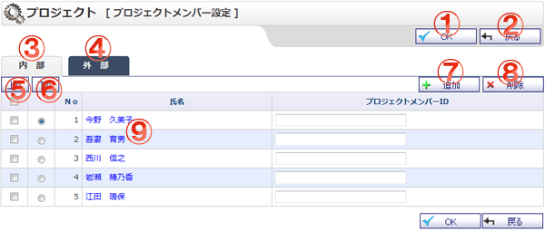

プロジェクトメンバーIDを設定する画面です。

機能説明
OKボタンプロジェクトメンバーIDを設定します。プロジェクトメンバーID編集完了画面へ遷移します。 |
戻るボタン遷移元画面へ遷移します。 |
|---|---|
内部タブプロジェクトメンバー内部設定画面へ遷移します。 |
外部タブプロジェクトメンバー外部設定画面へ遷移します。 |
上へボタンラジオボタンで選択されているユーザの表示順を1つ上げます。 |
下へボタンラジオボタンで選択されているユーザの表示順を1つ下げます。 |
追加ボタンプロジェクトメンバー選択画面に遷移します。 |
削除ボタンチェックボックスで選択したユーザを一括削除します。 |
氏名ユーザ名リンクをクリックすると、詳細なユーザ情報をポップアップで表示します。 |